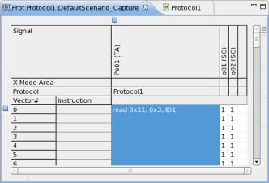
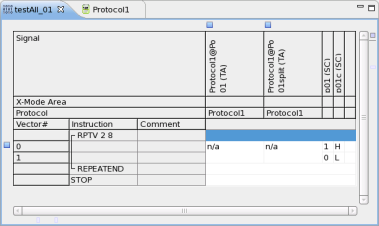

Protocol pattern specifics of the Pattern Editor
The pattern editor has been enhanced to view protocol transactions.
Note You have to select a signal of type TA in the layout configuration of the
Pattern Editor.
Displaying a protocol pattern
If you open a protocol pattern in the Pattern Explorer, the following information will be displayed:
- Name of the protocol
- Transaction along with the parameter specified for that transaction in the Protocol editor.
The example below shows details to the read transaction with the parameters defined for your transaction in Transaction details.

Displaying a non protocol pattern
If you open a non protocol pattern with a layout that also displays transactions, the transaction will not be reconstructed automatically.
Instead the Protocol Editor shows n/a for all transaction signals, as the example below illustrates.

You manually have to reconstruct transaction signals as described in Reconstructing transaction signals.
Functional changes
- Introduced in SmarTest 7.1.0